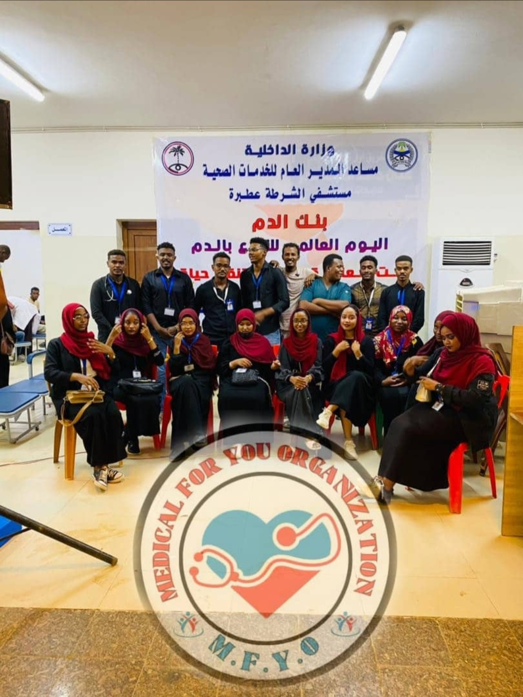
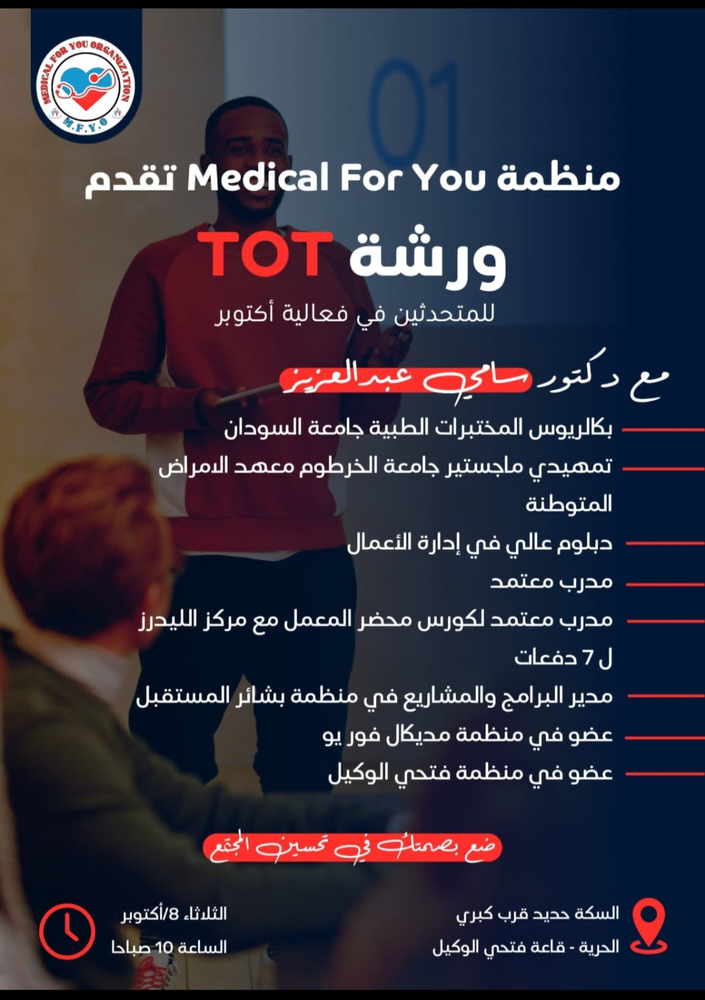
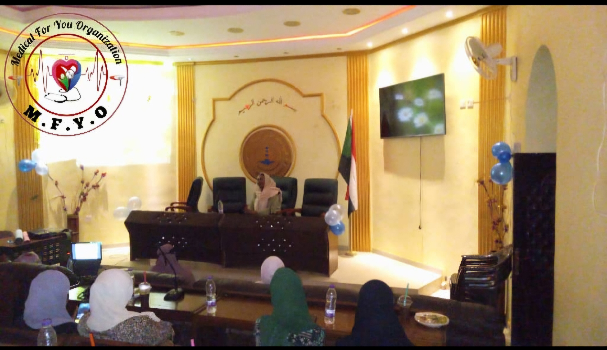

مرحباً بكم في ميديكال فور يو
نحن منظمة رائدة تهدف إلى تقديم أفضل الخدمات الطبية والإرشادات الصحية لضمان مجتمع صحي وآمن.
من نحن
منظمة "ميديكال فور يو" هي مؤسسة صحية متكاملة تضم نخبة من الكوادر الطبية والتمريضية المتخصصة. نلتزم بتقديم رعاية طبية شاملة، ونسعى للارتقاء بمستوى الوعي الصحي وتطبيق أحدث المعايير السريرية.
خدماتنا
- العناية التمريضية الشاملة: تقديم رعاية متخصصة للمرضى على أيدي طواقم تمريضية مؤهلة.
- برامج مكافحة انتقال العدوى: نشر الوعي وتطبيق الإجراءات الوقائية للحد من انتقال الأمراض.
- الاستشارات الطبية: توفير تقييمات طبية دقيقة وإرشادات مخصصة.
معرض الصور
جانب من أنشطة المنظمة وجهود الكوادر الطبية:

طاقم التمريض أثناء تقديم الرعاية

تطبيق معايير العناية التمريضية

تدريب الكوادر في المستشفيات
الأسئلة الشائعة
ما هي أهم طرق الوقاية من انتقال العدوى في المستشفيات؟
تعتبر نظافة وتطهير اليدين المستمر، واستخدام معدات الوقاية الشخصية (PPE) بالشكل الصحيح، من أهم الركائز لمنع انتقال العدوى.
هل تقدمون دورات تدريبية للكوادر التمريضية حديثي التخرج؟
نعم، المنظمة توفر برامج تدريبية متخصصة لرفع الكفاءة وتعزيز المعرفة بدور الممرض في مختلف الأقسام السريرية.
كيف يمكنني التطوع في برامج المنظمة؟
يمكنك الانضمام إلينا من خلال الضغط على رابط "طلب عضوية" في أعلى الصفحة، وسيقوم فريقنا بالتواصل معك.